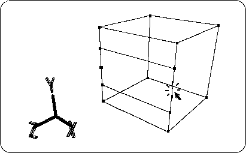
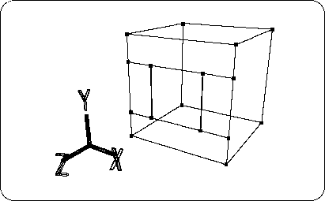
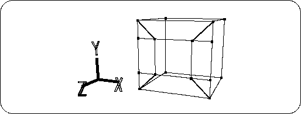

Return to previous page | Return to menu | Go to next page
[Mesh] → [Vertex], right mouse button
Then, delete the first two extra vertices. (Figure 2-7).

Similarly, each newly created edge is divided into four parts, two edges are created, and the excess midpoint is deleted (Figure 2-8).

Add four more edges (Figure 2-9).
